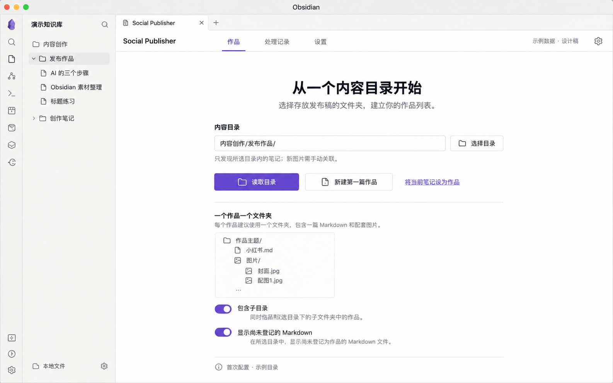
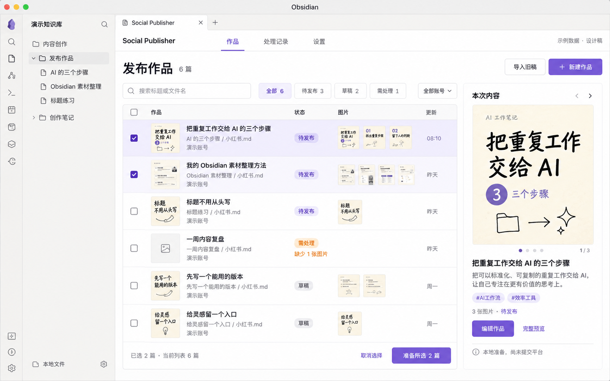
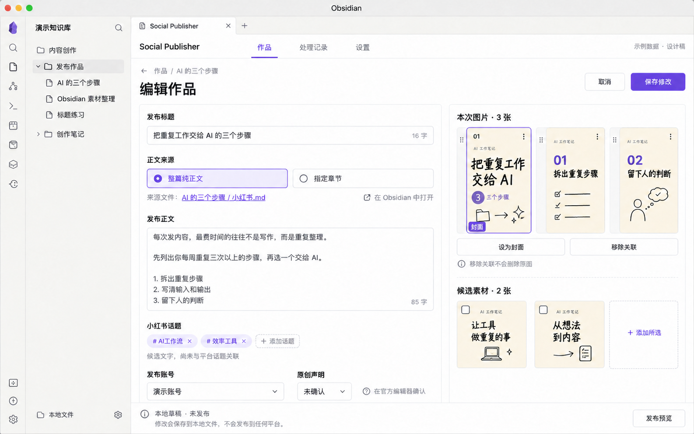
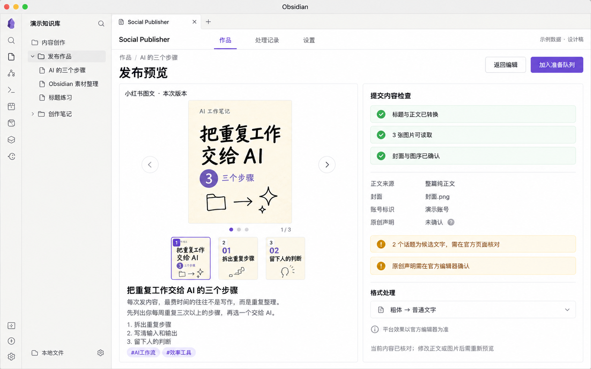
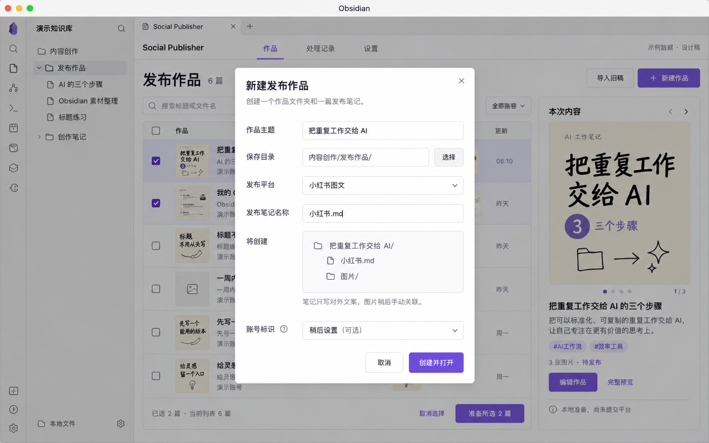
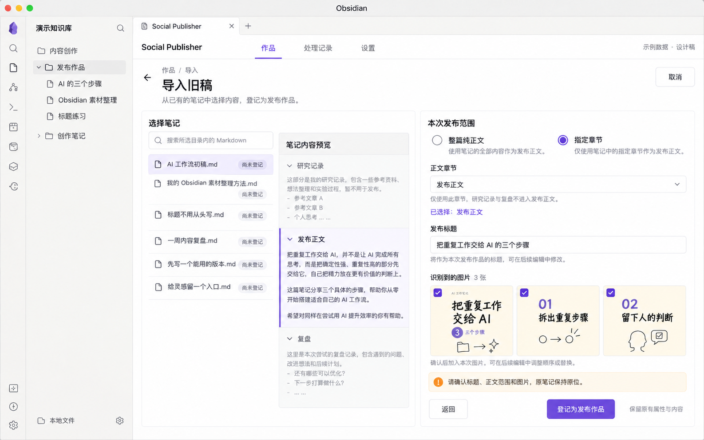
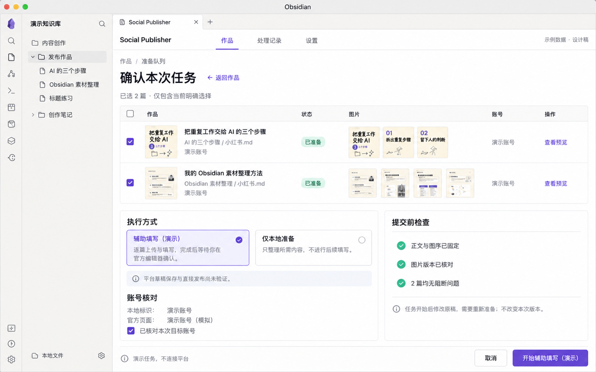
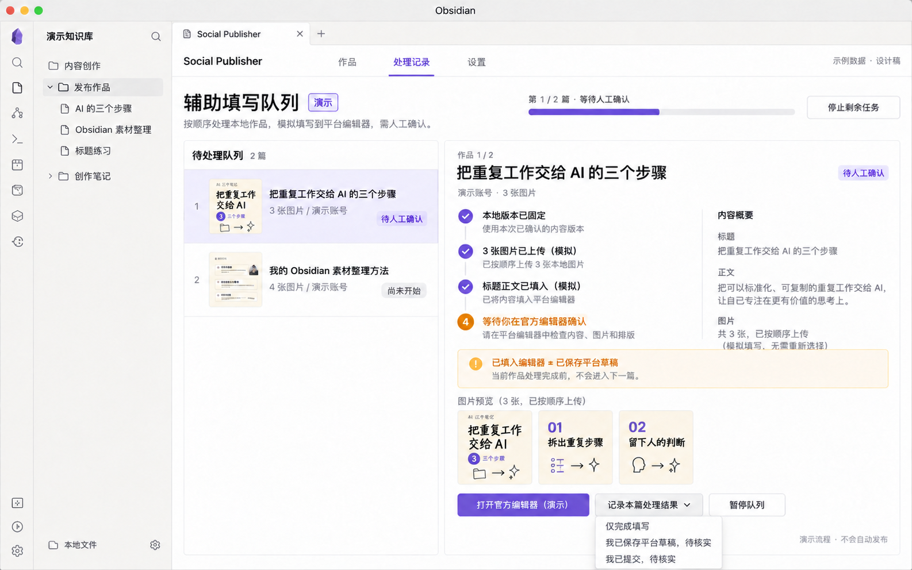
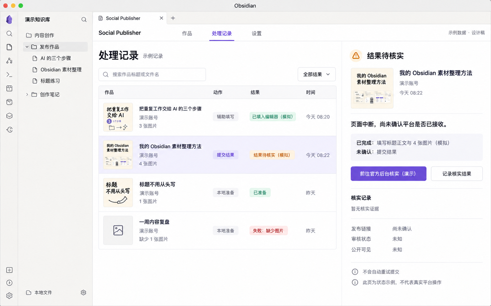
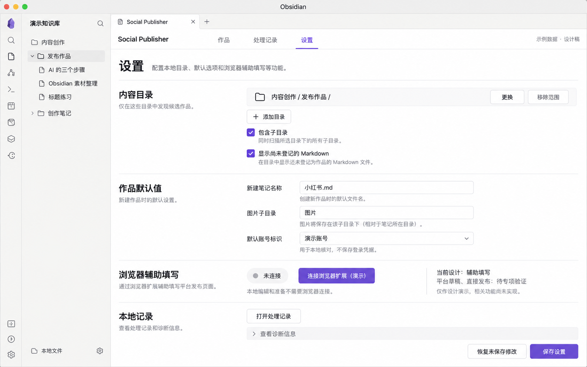

Obsidian Social Publisher · 视觉评审 v1
先确认这套布局与操作流程，再据此制作可操作原型。点击任意设计图可查看原始尺寸。
全部为 GPT Image 生成的合成样例。辅助填写与结果仅作演示；当前交付是页面视觉稿。
01 · 首次使用
选择内容目录，或把当前笔记登记为作品。

02 · 作品工作台
在当前筛选结果中选择作品，右侧核对内容。

03 · 作品编辑与图序
编辑发布字段、封面和图序，候选素材显式加入。

04 · 实际提交内容预览
查看转换后的实际提交文本及需处理事项。

05 · 新建发布作品
只创建一个作品文件夹与最少文件。

06 · 旧稿导入与正文范围
从旧稿明确选择正文章节，原笔记原位保留。

07 · 批次确认
一次核对选中范围、账号与执行方式。

08 · 辅助填写队列
逐篇处理；等待当前篇确认后才进入下一篇。

09 · 处理记录与结果待核实
结果不明保留待核实，避免重复提交。

10 · 设置与本地连接
管理目录、默认值与后续浏览器连接。
